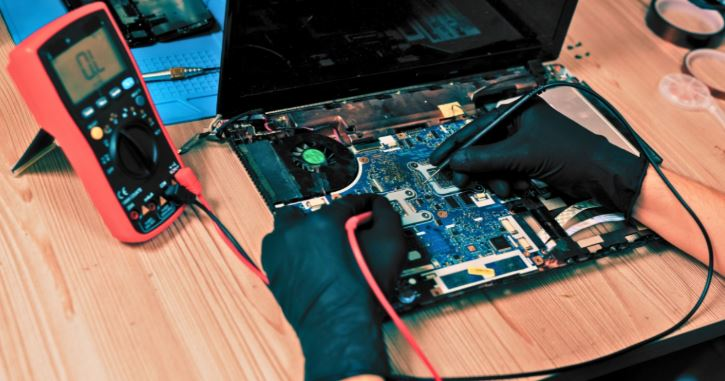
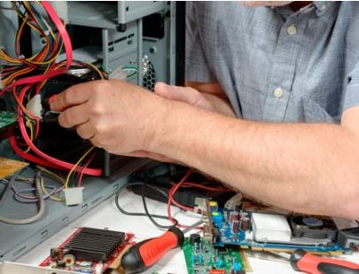
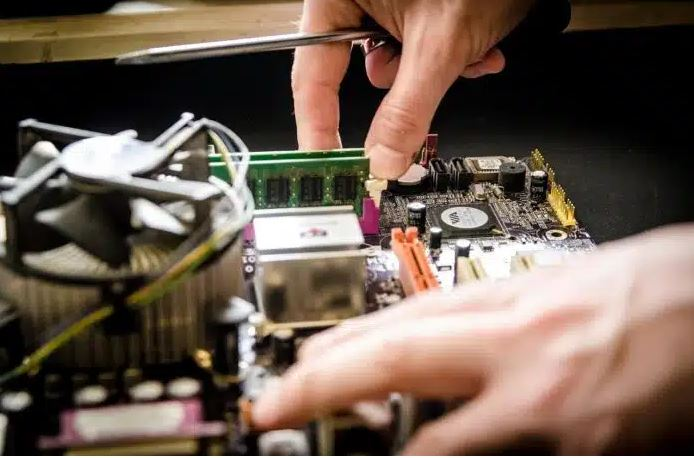

Reparación de Laptops y PC
En Mecatromedical SAC ofrecemos diagnóstico y reparación especializada de laptops y computadoras de escritorio. Atendemos fallas de hardware y software para equipos de oficina, uso personal y técnico.
Realizamos cambio de pantallas, limpieza interna, solución de problemas de placa (main board), errores del sistema operativo, recuperación de archivos, mejora de velocidad (upgrade de RAM o disco SSD), entre otros.
Nuestro servicio incluye pruebas funcionales, instalación de drivers y mantenimiento preventivo para alargar la vida útil de los equipos.


